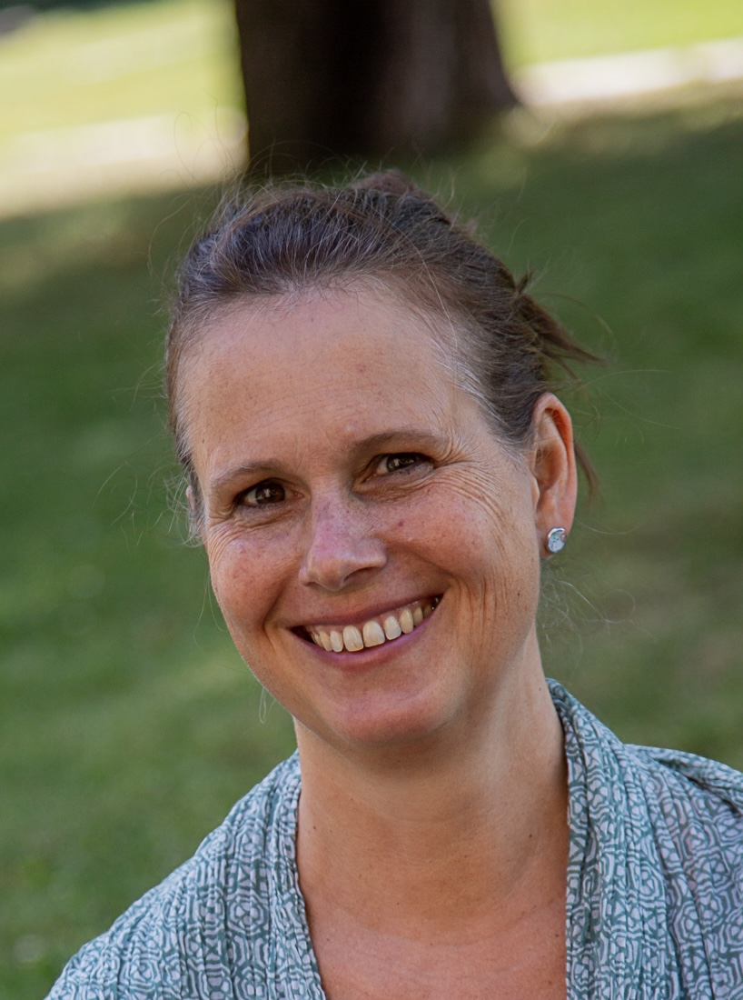

In meiner Praxis biete ich einen geschützten Rahmen, um zu mehr Resilienz, Selbstregulation und seelischer Balance zu finden.
Seit 30 Jahren begleite ich Menschen körpertherapeutisch mit Alexandertechnik und Personzentrierter Beratung. Die traumatherapeutische Methode Somatic Experiencing (SE) stellt nun eine wertvolle Erweiterung meiner Kompetenzen dar.
Aktuell befinde ich mich in der Ausbildung zur Heilpraktikerin für Psychotherapie und im Training zur IFS-Therapeutin (Internal Family Systems).
Individuelle Beratung und Begleitung bei:
- chronischem Stress und Erschöpfungssymptomen
- psychosomatischen Erkrankungen
- Belastung durch traumatische Erfahrungen
Standorte:
• Basel: Gerbergässlein 8
• Offenburg: Praxisadresse auf Anfrage
• Freiburg: Kirchstraße 53
• Basel: Gerbergässlein 8
• Offenburg: Praxisadresse auf Anfrage
• Freiburg: Kirchstraße 53
Email: bertram.annette@t-online.de
CH: +41 76 689 1797 | DE: +49 170 231 6555
CH: +41 76 689 1797 | DE: +49 170 231 6555